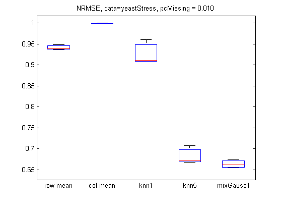
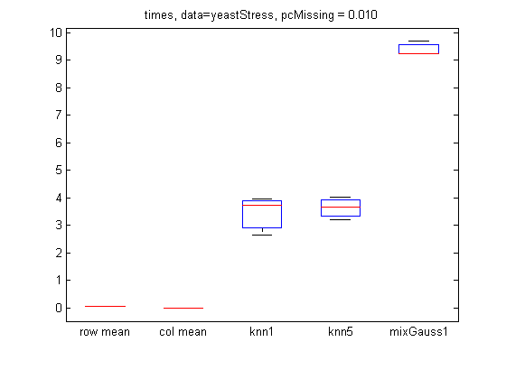
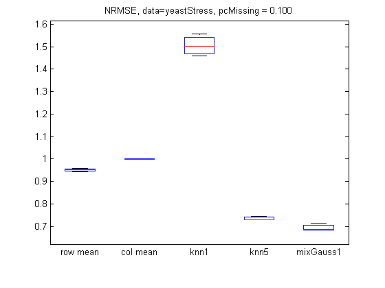
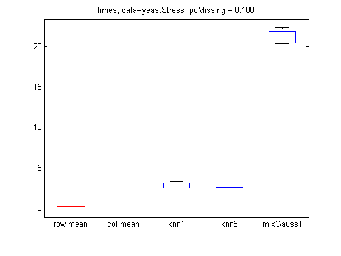
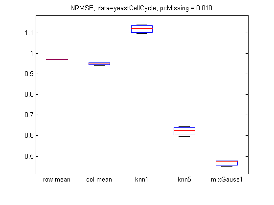
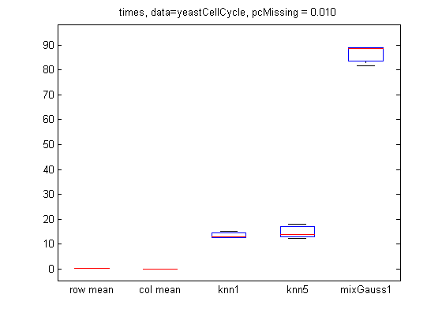
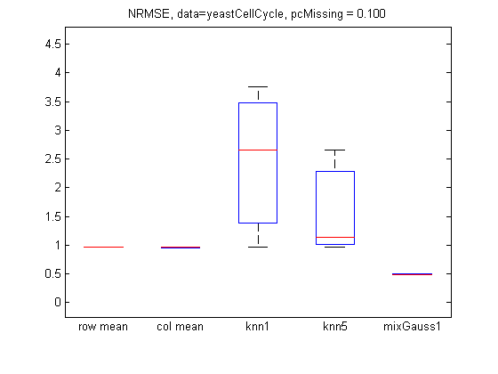
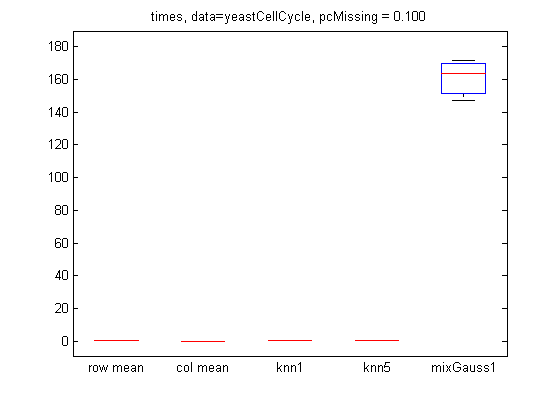

Comparison of methods for imputing missing values in a gene microarray
PMTKslow PMTKauthor Kevin Murphy PMTKneedsStatsToolbox boxplot
Contents
function [] = imputationGeneMicroarrayDemo() requireStatsToolbox % yeastStress 6152x174, 5338 fully observed rows (on 15 chosen columns) % yeastCellCycle 6221x81, 3222 fully observed rows datasets = {'yeastStress', 'yeastCellCycle'}; for di=1:length(datasets)
dataName = datasets{di};
loadData(dataName)
if strcmpi(dataName, 'yeastStress')
% extract the 15 columns used in the Ouyang, Welsh, Georgopolous paper
% These are features that are not too correlated (unlike cell cycle)
X = yeastStress.X;
ndx = [45 53 68 70 74 82 89 95 98 99 104 117 158 165 145];
X = X(:,ndx);
end
% only use the rows with no missing data
nomissing = any(isnan(X),2) == 0;
X = X(nomissing, :);
fprintf('%s, num fully observed rows %d\n', dataName, sum(nomissing));
% initialize bookkeeping variables
setSeed(0);
[N, D] = size(X);
pc = [0.01, 0.1];
ntrials = 3; % for speed
opts = {'verbose', true, 'doMAP', true};
methodNames = {'row mean', 'col mean', 'knn1', 'knn5', 'mixGauss1'}; % 'mixGauss5'};
imputeRows = @(X)imputeColumns(X')';
imputeFns = {imputeRows, @imputeColumns, @(X)imputeKnn(X, 1), @(X)imputeKnn(X, 5), ...
@(X)mixGaussImpute(mixGaussCreate([], [], [], 1), X, opts{:})};
%@(X)imputeMixGauss(X, 5, opts{:})};
nMethod = length(methodNames);
yeastStress, num fully observed rows 5338
yeastCellCycle, num fully observed rows 3222
For each percentage of missing, do several trials
for pidx = 1:length(pc)
errors = zeros(ntrials, nMethod);
times = zeros(ntrials, nMethod);
for trial = 1:ntrials
missing = rand(N,D) < pc(pidx);
Xmiss = X;
Xmiss(missing) = NaN;
for method = 1:nMethod
fn = imputeFns{method};
tic
fprintf('p %3.5f, trial %d, method %s\n', pc(pidx), trial, methodNames{method});
Ximpute = fn(Xmiss);
t=toc;
times(trial, method) = t;
errors(trial, method) = NRMSE(X, Ximpute, missing);
end
end
p 0.01000, trial 1, method row mean p 0.01000, trial 1, method col mean p 0.01000, trial 1, method knn1 p 0.01000, trial 1, method knn5 p 0.01000, trial 1, method mixGauss1 1 loglik: -96752 2 loglik: -58745.3 3 loglik: -58596.1 4 loglik: -58596 p 0.01000, trial 2, method row mean p 0.01000, trial 2, method col mean p 0.01000, trial 2, method knn1 p 0.01000, trial 2, method knn5 p 0.01000, trial 2, method mixGauss1 1 loglik: -96793.7 2 loglik: -58682.2 3 loglik: -58543.3 4 loglik: -58543.3 p 0.01000, trial 3, method row mean p 0.01000, trial 3, method col mean p 0.01000, trial 3, method knn1 p 0.01000, trial 3, method knn5 p 0.01000, trial 3, method mixGauss1 1 loglik: -96788.8 2 loglik: -58702.6 3 loglik: -58539.7 4 loglik: -58539.6
p 0.10000, trial 1, method row mean p 0.10000, trial 1, method col mean p 0.10000, trial 1, method knn1 p 0.10000, trial 1, method knn5 p 0.10000, trial 1, method mixGauss1 1 loglik: -96641.4 2 loglik: -65688 3 loglik: -60939.6 4 loglik: -60643 5 loglik: -60623.5 6 loglik: -60621.9 p 0.10000, trial 2, method row mean p 0.10000, trial 2, method col mean p 0.10000, trial 2, method knn1 p 0.10000, trial 2, method knn5 p 0.10000, trial 2, method mixGauss1 1 loglik: -96762.8 2 loglik: -65815.2 3 loglik: -61108.1 4 loglik: -60836.3 5 loglik: -60821.1 6 loglik: -60820.1 p 0.10000, trial 3, method row mean p 0.10000, trial 3, method col mean p 0.10000, trial 3, method knn1 p 0.10000, trial 3, method knn5 p 0.10000, trial 3, method mixGauss1 1 loglik: -96680.1 2 loglik: -65375.4 3 loglik: -60859.5 4 loglik: -60610.3 5 loglik: -60596 6 loglik: -60595
p 0.01000, trial 1, method row mean p 0.01000, trial 1, method col mean p 0.01000, trial 1, method knn1 p 0.01000, trial 1, method knn5 p 0.01000, trial 1, method mixGauss1 1 loglik: -285796 2 loglik: -51596.3 3 loglik: -42580.3 4 loglik: -42414.9 5 loglik: -42414.8 p 0.01000, trial 2, method row mean p 0.01000, trial 2, method col mean p 0.01000, trial 2, method knn1 p 0.01000, trial 2, method knn5 p 0.01000, trial 2, method mixGauss1 1 loglik: -285812 2 loglik: -52332.9 3 loglik: -43103.4 4 loglik: -42555.9 5 loglik: -42555.6 p 0.01000, trial 3, method row mean p 0.01000, trial 3, method col mean p 0.01000, trial 3, method knn1 p 0.01000, trial 3, method knn5 p 0.01000, trial 3, method mixGauss1 1 loglik: -285755 2 loglik: -51458.2 3 loglik: -42606.3 4 loglik: -42385 5 loglik: -42385
p 0.10000, trial 1, method row mean p 0.10000, trial 1, method col mean p 0.10000, trial 1, method knn1 p 0.10000, trial 1, method knn5 p 0.10000, trial 1, method mixGauss1 1 loglik: -290773 2 loglik: -124349 3 loglik: -73052.6 4 loglik: -65151.4 5 loglik: -63219.9 6 loglik: -63059.8 7 loglik: -63055.7 p 0.10000, trial 2, method row mean p 0.10000, trial 2, method col mean p 0.10000, trial 2, method knn1 p 0.10000, trial 2, method knn5 p 0.10000, trial 2, method mixGauss1 1 loglik: -290769 2 loglik: -125060 3 loglik: -73592.9 4 loglik: -65601.4 5 loglik: -63591 6 loglik: -63405.4 7 loglik: -63400.8 p 0.10000, trial 3, method row mean p 0.10000, trial 3, method col mean p 0.10000, trial 3, method knn1 p 0.10000, trial 3, method knn5 p 0.10000, trial 3, method mixGauss1 1 loglik: -290782 2 loglik: -125129 3 loglik: -73564 4 loglik: -65610.8 5 loglik: -63360.5 6 loglik: -63049 7 loglik: -63040.1 8 loglik: -63039.7
Plot
figure;
boxplot(errors, 'labels', methodNames);
title(sprintf('NRMSE, data=%s, pcMissing = %5.3f', dataName, pc(pidx)));
printPmtkFigure(sprintf('imputationGeneError%s%dpc2', dataName, pc(pidx)*100));
figure;
boxplot(times, 'labels', methodNames);
title(sprintf('times, data=%s, pcMissing = %5.3f', dataName, pc(pidx)));
printPmtkFigure(sprintf('imputationGeneTime%s%dpc2', dataName, pc(pidx)*100));
        end % p
end % di end % functon function error = NRMSE(Xfull, Ximputed, miss) idx = find(miss == 1); numer = (Ximputed(idx) - Xfull(idx)).^2; denom = (Xfull(idx)).^2; error = sqrt(sum(numer)) / sqrt(sum(denom)); end